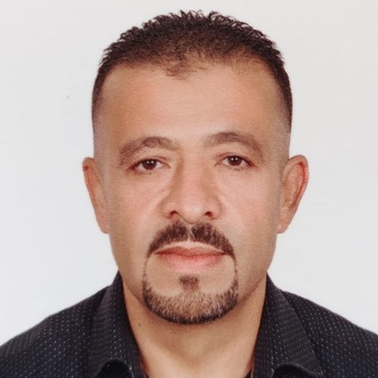

Work with me
DR. A.SATTAR AMRI
I work with schools in Bahrain and the Gulf on better lessons and stronger leadership. Every session uses frameworks I built and use in the schools I lead, after more than 30 years in education.
أعمل مع المدارس في البحرين والخليج على تحسين جودة التعليم وتطوير القيادة المدرسية، باستخدام أُطر عمل طوّرتها وأطبّقها في المدارس التي أقودها.
Teacher PD days
Whole-staff or department sessions on lesson quality (QuadLens, QuadFlow, KUD Lesson Design), assessment and how students learn. Each PD day includes a follow-up visit 4 to 6 weeks later to check what reached classrooms.
For: principals and PD coordinators
Leadership coaching
Coaching for principals and leadership teams on clarity, accountability and leading change, using LeadCTRM and QuadOwn.
For: principals, vice principals, middle leaders
School improvement support
Self-evaluation, improvement planning and preparing for external review, with indicators your team can track.
For: school owners and senior leadership teams
Speaking
Keynotes and workshops for conferences and education events, in English or Arabic.
For: event organisers and education networks
Start with a conversation
Tell me about your school and what you'd like to change.